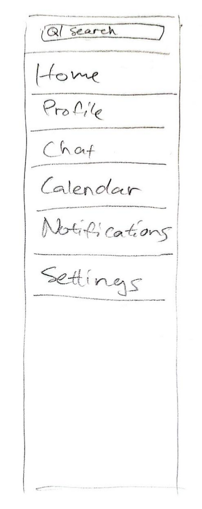
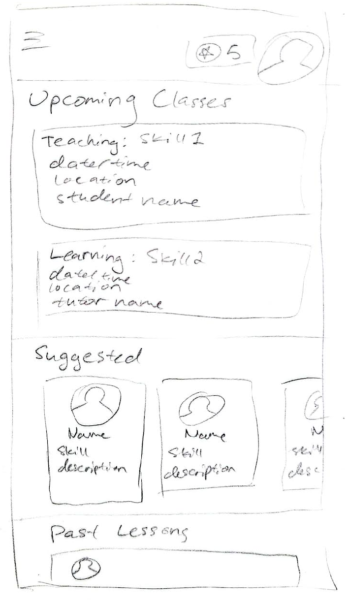
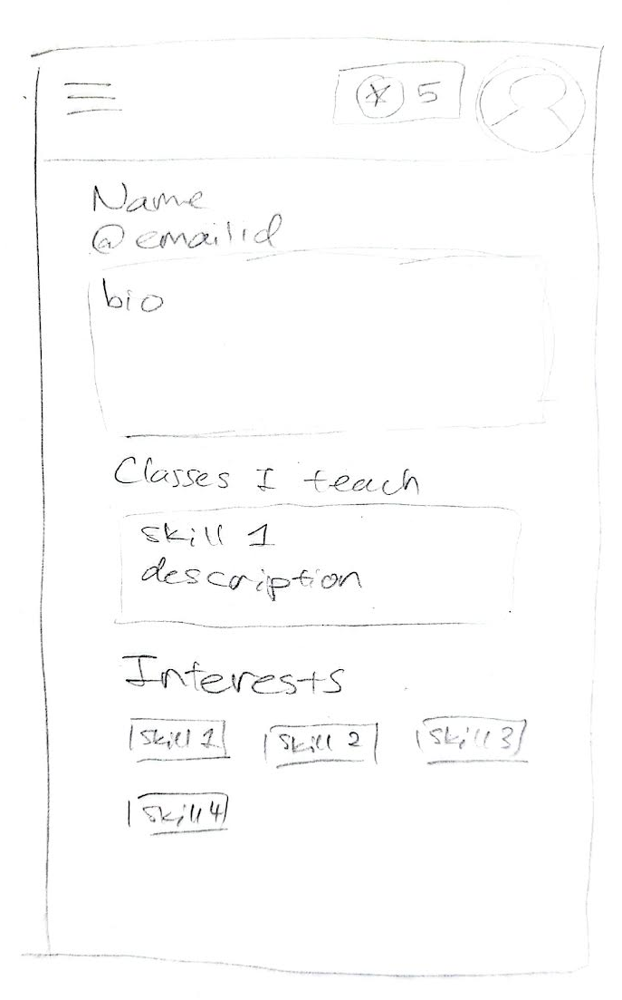
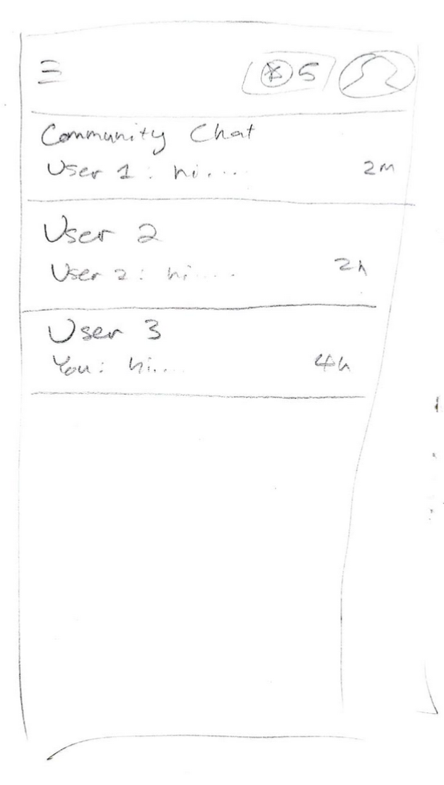
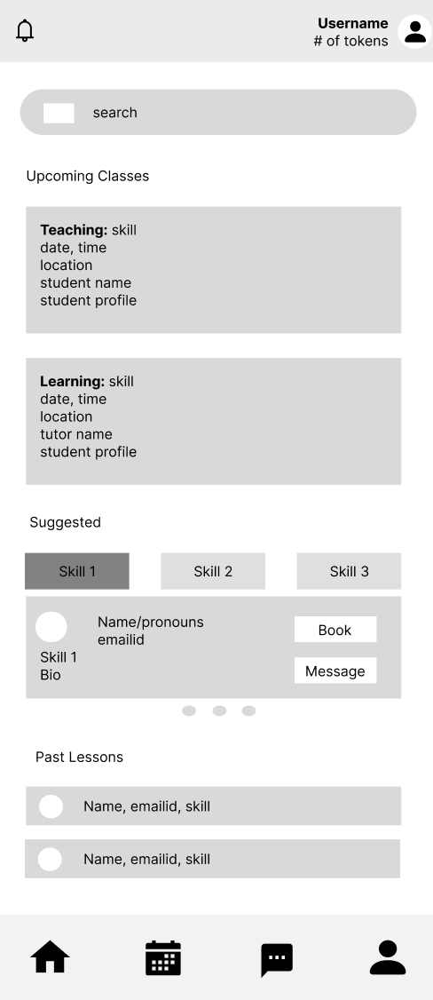
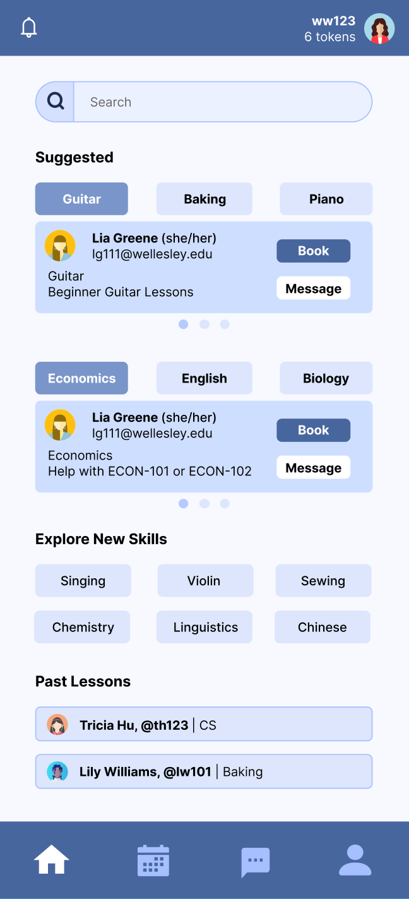
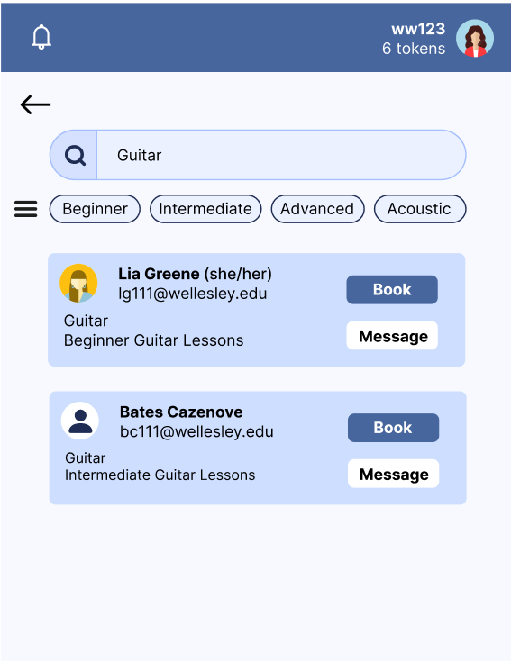
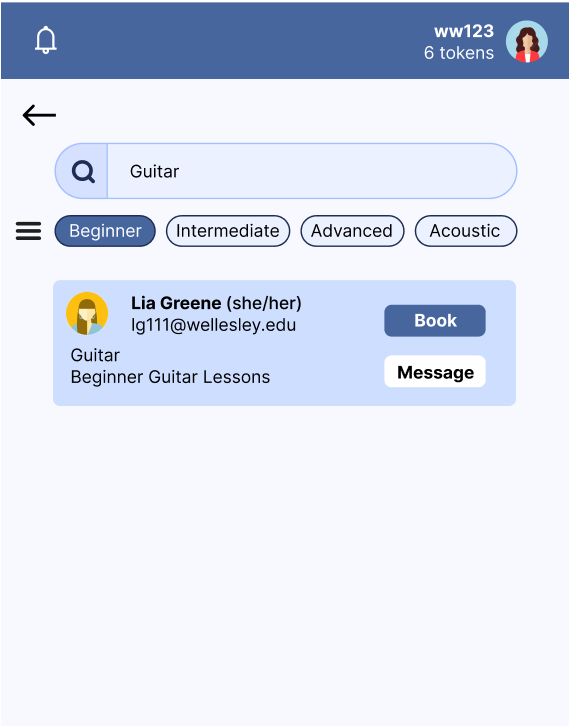

Blue Exchange Case Study
Problem
Through needfinding interviews, our team found that students often had trouble finding tutorials online and that they didn't want to spend money on classes. Thus, we decided to create an app that would allow students to tutor each other, mostly through a system of exchanging services. Our target population was Wellesley College students, mainly those who lived on campus.
Contributions
All team members contributed in each stage of the project, including storyboarding, interviewing, and desinging on Figma. Overall, I drew an initial design sketch, interviewed three users, and designed all of the home and search pages.
My Design Sketches: Menu,Home,Profile,Messages




Design Process: Home Page
At first, our home page included an Upcoming Classes section at the top of the page. Some users felt that it was irrelevant and shouldn't take up such an important location at the top of the home page, so we removed it and added more Suggestions and Exploration sections.
Home Page: Prototype and Final


Design Process: Search Page
Our search bar was not functional at first, which some users disliked, as they felt the search bar was very central and necessary to the app. Some were also curious about what filtering capabilities we would implement.
Search Page: Filter Functionality


Conclusions
As the designers, we didn't anticipate that people would have trouble with the layout. Notably, one user didn't realize that they were on the home page because we had forgotten to highlight the current page icon on the menu bar. Small details like these play a big role in making a website intuitive, which is why our user interviews are so valuable.